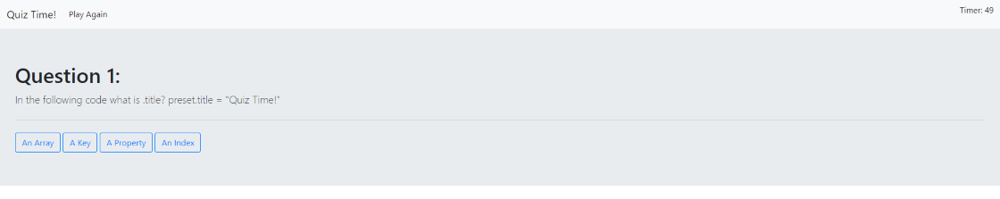

The following App is designed to provide the user with a brief quiz over JavaScript content. The user will have 60 to complete the quiz. Once completed they will be prompted to input their initials and their score added to the 'high score list'.
Source code for this project can be found at: Github Repository: https://github.com/cr31293/Quiz-Time GitPages: https://cr31293.github.io/Quiz-Time/
